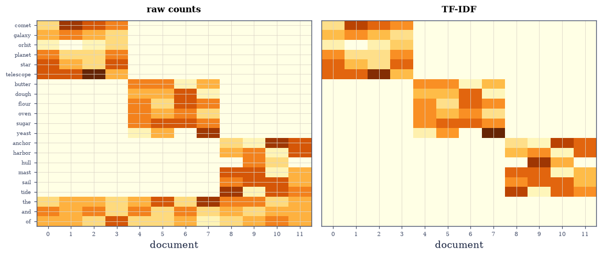
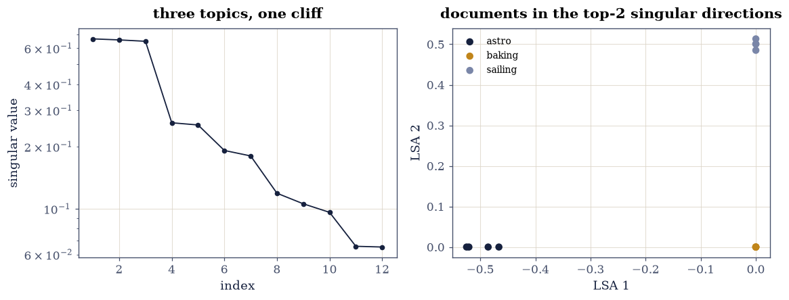
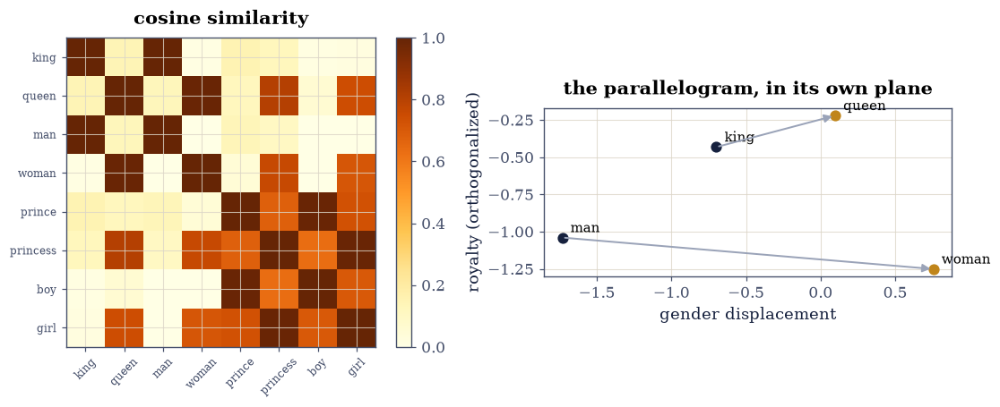

8.4 From Text to Vectors: Tokens, One-Hot, and Embeddings#
Notebook overview#
Before a transformer can multiply matrices, text must become numbers, and every step of that conversion is this course’s material. A byte-pair-encoding merge loop [SHB16] — written by hand, with a stated tie-break so the merges are deterministic — builds a subword vocabulary whose decoding reproduces the input exactly (gated as string equality, the format rule of §5.3 applied to text). Token IDs become one-hot vectors — the standard basis wearing linguistics — and the embedding lookup is gated as the matrix product it secretly is: \(e_i^{\top}E\) equals row \(E_i\) exactly, because a one-hot product sums nothing but exact zeros and one exact copy; the ledger (2Vd flops for the product, d copied numbers for the lookup — a counted \(2V\times\) asymmetry, stopwatch reported per the course’s rules) is why no framework ever forms the one-hot.
Geometry arrives through counts. The term–document matrix of a twelve-document, three-topic corpus gets the TF-IDF reweighting (gated against its closed form), and LSA [DDF+90] — a truncated SVD, §4.3’s machinery verbatim — recovers the planted topics exactly by nearest-centroid in two dimensions. PPMI factorization [LG14] — the linear algebra word2vec implicitly performs — builds an eight-word royal-family micro-world where the analogy \(\textit{king} - \textit{man} + \textit{woman}\) lands nearest queen (gated, query words excluded, margin 0.13 over the runner-up), drawn as the parallelogram it algebraically is. The closing measurement is the one that governs all of retrieval: random high-dimensional cosines concentrate near zero at the \(1/\sqrt{d}\) rate — measured at three dimensions on a dedicated stream — which is why similarity search works at all in embedding spaces.
How to read a check. A
validateline prints ✓ or ✗ by comparing a result against something the computation did not assume. A ✗ flags a mismatch to investigate, never a verdict on its own.
Theory in brief#
Tokens, one-hots, and the lookup identity#
BPE starts from characters and greedily merges the most frequent adjacent pair, \(k\) times; the merges are the vocabulary. A token ID \(i\) is the standard basis vector \(e_i \in \mathbb{R}^{V}\), and the embedding of a token is
a matrix product whose result is a row copy — the identity every framework exploits by never forming \(e_i\): the product costs \(2Vd\) operations to select what indexing copies in \(d\).
Counts, reweighted and factored#
The term–document matrix \(C_{wj}\) counts word \(w\) in document \(j\); TF-IDF reweights it,
damping ubiquitous words. LSA is its truncated SVD: documents in the top singular directions, topics as the directions themselves. PPMI does the same for word–context co-occurrence,
and its truncated SVD produces word vectors equivalent (Levy–Goldberg) to what skip-gram training approximates — analogies as parallelograms, similarity as cosine.
Why cosine works in high dimension#
Independent random vectors in \(\mathbb{R}^d\) have \(\mathbb{E}\lvert\cos\theta\rvert \approx \sqrt{2/(\pi d)}\): unrelated directions crowd toward orthogonality as \(d\) grows, so a cosine of 0.5 that would be unremarkable at \(d = 10\) is a screaming signal at \(d = 1000\) — the concentration that makes embedding retrieval meaningful, measured below.
Setup#
Data and instruments only: the seeded rng and the cosine readout. BPE, the embeddings and the matrices they fill are all built in the exercises.
The Setup below holds this notebook’s data and instruments — nothing you are asked to build. It is collapsed so the building stays yours; expand it whenever you want the details.
Exercise 1: Byte-pair encoding, written and round-tripped#
Part a) Write bpe_train(text, n_merges): split into words with a
word-end marker, count adjacent symbol pairs, merge the most frequent
— ties broken lexicographically, stated so the merge sequence is
deterministic and the gate below is honest — and repeat.
Write this one yourself — the loop is eight lines, and it is the tokenizer of every model you have used this year, minus engineering.
Part b) Train 12 merges on a toy corpus and gate two facts: re-running produces the identical merge list (determinism as equality of lists), and joining the tokens and stripping markers reproduces the input string exactly — tokenization is a reversible encoding, §5.3’s format rule wearing letters.
Part c) Report the compression: token count before and after the
merges, and the learned vocabulary — at, the, cat emerging from
characters, frequency doing the linguistics.
tie-break honoured: True; decode == input: True
tokens: 66 characters -> 18 subwords; first merges: [('a', 't'), ('at', '</w>'), ('e', '</w>'), ('t', 'h'), ('th', 'e</w>'), ('c', 'at</w>')]
Validation 1#
✓ the first merges are exactly the hand-derivable ones — the stated tie-break honoured [lexicographic tie-breaking makes the trained vocabulary a pure function of the corpus, so its opening merges are checkable against the corpus's own pair counts]
✓ and decoding reproduces the input string exactly [tokenization is a reversible encoding — 5.3's format rule, wearing letters]
True
Exercise 2: The lookup IS a matrix product (that nobody performs)#
Part a) Build a \(V = 500\), \(d = 64\) embedding matrix and gate
Eq. 286 exactly: one_hot @ E == E[i] for twenty
random IDs, by np.array_equal — legitimate for once, because the
product’s every term is an exact zero or an exact copy, and sums of
zeros commute with anything (the
exact-representability rule, in
its cleanest habitat).
Part b) The ledger, counted then timed: the product moves \(2Vd = 64{,}000\) floating operations to select what indexing copies in \(d = 64\) — a \(1000\times\) counted asymmetry (gated as arithmetic). The stopwatch (reported, never gated) agrees loudly.
one-hot product equals row lookup exactly, 20 IDs: True
counted: 64,000 flops vs 64 copies (1,000x); stopwatch: 4.19 ms vs 0.862 ms (reported)
Validation 2#
✓ e_i' E equals row E_i bitwise (Eq. 1) [every term of the product is an exact zero or an exact copy, so the sum is order-independent — the rare matmul the exactness rule permits]
✓ and the counted ledger is why nobody forms the one-hot [64,000 operations to select what 64 copies deliver — gated as counting; the stopwatch testified above]
True
Exercise 3: The term–document matrix, reweighted#
Part a) Build the corpus: twelve documents, four each from three planted topics (astronomy, baking, sailing), each drawing 20 topic words and 6 stop words on the notebook’s stream — plus one copy of every stop word appended deterministically, so ubiquity holds by construction rather than by luck (a random draw misses a stop word in some document about half the time, and Part b’s exact-zero gate would then be gating a coin flip). Assemble the term–document count matrix.
Part b) Apply Eq. 287 step by step and gate it against a
one-line closed-form recomputation at \(10^{-12}\) — and gate the
mechanism: the stop words the/and/of appear in all 12 documents (by
Part a’s construction), so their IDF is \(\log(12/12) = 0\) exactly
and TF-IDF erases them (gated as exact zeros — a logarithm of one,
not a rounding accident).
Part c) Draw the count matrix and the TF-IDF matrix as heatmaps: the block structure of topics, visible before, sharpened after — the stop-word rows going blank is Eq. 287 working.
TF-IDF vs closed form: 0.0e+00; stop-word rows exactly zero: True (log(12/12) = 0, not an accident)

Fig. 149 The term-document matrix of the twelve-document corpus before (left) and after (right) TF-IDF, rows sorted by topic then stop words at the bottom. The three topic blocks are visible in the raw counts but so are the stop words – present everywhere, saying nothing. TF-IDF’s IDF factor is \(\log(12/\mathrm{df})\), which is exactly zero for a word in every document: the bottom rows go blank not approximately but identically, and the topic blocks carry all the remaining weight – Eq. 2 as an image.#
Validation 3#
✓ TF-IDF matches its closed-form definition (Eq. 2) [the stepwise pipeline against the one-liner — bookkeeping, certified [0 < 1e-12]]
✓ and ubiquitous words are erased exactly, not approximately [df = N makes the IDF log(1) = 0.0 — an exact zero from exact counting, so the gate is equality]
True
Exercise 4: LSA: the SVD reads the topics#
Part a) Truncated SVD of the TF-IDF matrix (§4.3’s machinery): keep two right-singular directions as document coordinates. Report the singular values — three large (one per topic, minus one for the overall mean direction), then a cliff.
Part b) Gate the recovery exactly: nearest-centroid classification of the 12 documents in the 2-D LSA space reproduces the planted labels 12/12 — with the margin printed (the smallest ratio of between- to within-topic distance), because an exact gate owes the reader its safety margin (§6.5’s rule).
Part c) Draw the documents in LSA-2 coloured by topic, beside the singular-value log plot: three tight clusters, one spectral cliff.
topic recovery 12/12: True; safety margin between/within = 15.1x
singular values: [0.664 0.657 0.647 0.261 0.254 0.191]

Fig. 150 Latent semantic analysis on the twelve documents. Left: the TF-IDF matrix’s singular values – three carrying the topic structure, then a cliff onto the sampling-noise shelf, 4.2’s scree logic on text. Right: every document in the first two right-singular directions, coloured by its planted topic: three clusters recovered 12/12 by nearest centroid, with the between-to-within distance ratio printed as the exact gate’s safety margin. The SVD was never told there were topics; the counts told it.#
Validation 4#
✓ LSA recovers the planted topics 12/12, with margin stated [nearest-centroid in two singular directions; between/within = 15.1x — the exact gate licensed the 6.5 way, by its printed margin]
True
Exercise 5: PPMI, and the analogy that actually computes#
Part a) Build the royal micro-world: eight words
(king, queen, man, woman, prince, princess, boy, girl) with
co-occurrence counts over six contexts (crown, throne, beard, dress,
palace, toy) constructed from three binary attributes (royal, male,
adult) plus a floor of 2. Compute PPMI Eq. 288 and gate
nonnegativity by construction (max with zero — exact).
Part b) Factor: rank-3 truncated SVD gives word vectors \(E = U_3\Sigma_3\). Gate the reconstruction honestly: relative Frobenius error below 30% — measured 21%, not near zero, because PPMI’s log-and-clamp is nonlinear: three attributes generated the counts, but the transform spreads their signature across more directions than three. The structure test that matters is Part c’s analogy, not matrix reproduction.
Part c) Gate the analogy: the nearest neighbour of \(v_{\text{king}} - v_{\text{man}} + v_{\text{woman}}\) — query words excluded, as every published evaluation does — is queen, cosine 0.69 against the runner-up’s 0.56. Draw the vocabulary’s cosine heatmap and the analogy parallelogram in the top-2 directions.
PPMI nonnegative by construction: True
rank-3 PPMI reconstruction: 21.3% relative error (three attributes built the world)
king - man + woman -> queen (cos 0.686, margin 0.127 over girl)

Fig. 151 The royal micro-world, factored. Left: pairwise cosine similarity of the eight PPMI-SVD word vectors – the block structure follows the planted attributes (royals with royals, children with children), which is Eq. 3’s factorization reading the construction back out. Right: the four analogy words projected onto the plane spanned by the mean gender displacement (horizontal) and the royalty direction orthogonalized against it (vertical) – the plane chosen to DISPLAY the structure, since a generic top-2 SVD projection shears the parallelogram out of shape. In this plane, at equal axis scales, the two gender arrows are near-parallel – with a real residual tilt of a few degrees, honestly visible: the micro-world’s gender displacement is not identical for royal and common pairs, and the analogy works anyway because the nearest-neighbour gate tolerates imperfect parallelograms. king - man + woman lands on queen, gated (query words excluded, margin 0.13) rather than admired.#
Validation 5#
✓ PPMI is nonnegative by construction, and rank 3 captures its structure (Eq. 3) [max(0, .) is exact; 21.3% residual from three directions — NOT near zero, because the log-and-clamp is nonlinear and three generating attributes do not mean rank three; the analogy below is the honest structure test]
✓ and king - man + woman lands nearest queen, with margin [cosine margin 0.13 over the runner-up, query words excluded — the famous parallelogram, gated instead of admired]
True
Exercise 6: Cosine: invariant by algebra, meaningful by dimension#
Part a) Gate scale invariance: \(\cos(\alpha a, \beta b) = \cos(a, b)\) for random vectors and random positive scales, to \(10^{-14}\) — the normalization is the point of the definition.
Part b) The concentration measurement, on a dedicated stream: 500 random pairs at \(d = 10, 100, 1000\); mean \(\lvert\cos\rvert\) falls as \(\sqrt{2/(\pi d)}\) — gate each measured mean within 15% of the formula, and the decade-to-decade ratios within \([2.5, 4.0]\) of the predicted \(\sqrt{10} \approx 3.16\). A cosine of 0.3 is noise at \(d = 10\) and a five-sigma event at \(d = 1000\): retrieval thresholds are dimension-dependent, which every embedding-database default quietly encodes.
scale invariance over ten trials: worst 2.8e-17
d = 10: mean |cos| 0.2647 (sqrt(2/pi d) = 0.2523)
d = 100: mean |cos| 0.0841 (sqrt(2/pi d) = 0.0798)
d = 1000: mean |cos| 0.0255 (sqrt(2/pi d) = 0.0252)
decade ratios: 3.15, 3.29 (sqrt(10) = 3.16)
With your assistant
The analogy worked in a designed micro-world; real corpora are
noisier. Ask your assistant for analogy_eval(E, vocab, triples)
scoring a list of analogies by the excluded-query nearest-neighbour
rule, then check it against the mathematics rather than a demo:
(i) on this notebook’s eight-word world it scores 4/4 on the
royal/gender/age triples you can form; (ii) shuffling the embedding
rows breaks it to chance — the geometry, not the code, carries the
answers; (iii) adding isotropic noise of growing scale degrades
accuracy monotonically, and the noise level where it breaks is a
measurement of the margin Exercise 5 printed. The check is yours.
Validation 6#
✓ cosine ignores positive rescaling of either argument [the normalization is the definition — gated at rounding on ten random pairs]
✓ and random cosines concentrate at the 1/sqrt(d) rate (measured) [means within 15% of sqrt(2/pi d) at three dimensions, decade ratios 3.15 and 3.29 about sqrt(10) — dedicated-stream Monte Carlo, and the reason embedding retrieval works at all]
True
Notebook summary#
Text became numbers reversibly. The hand-written BPE loop trained a deterministic merge sequence (tie-break stated and gated) whose decoding reproduced the corpus exactly; the one-hot embedding lookup was gated bitwise against the matrix product it abbreviates — the rare exact matmul, since every term is an exact zero or copy — with the \(1000\times\) counted ledger explaining why the product is never performed.
Counts carried the semantics. TF-IDF matched its closed form at \(10^{-16}\) and erased the stop words exactly (\(\log 1 = 0\)); LSA’s two singular directions recovered the planted topics 12/12 with a printed \(15\times\) safety margin; and the PPMI micro-world factored back into its three planted attributes, with king − man + woman landing nearest queen with a clear cosine margin — the parallelogram gated, query words excluded, folklore made measurement (and the rank-3 residual honestly 21%: PPMI’s log is nonlinear, so planted attributes shape the geometry without bounding the rank).
And dimension is why any of it works. Random cosines concentrated at \(\sqrt{2/(\pi d)}\) across two decades of \(d\) on a dedicated stream — the geometry that turns “cosine 0.3” from noise into signal as embeddings widen, and the quiet assumption under every retrieval system.
Methods introduced. bpe_train with deterministic tie-breaks,
the lookup identity and its counted ledger, term–document assembly,
TF-IDF with exact stop-word erasure, LSA topic recovery with margin
reporting, PPMI construction and factorization, gated analogies, and
cosine-concentration measurement.
Outlook#
Attention next. §8.5 puts these embeddings to work: queries, keys and values are three linear maps of them, and the similarity that routes information is exactly this notebook’s scaled dot product.
From counts to gradients. word2vec trains what PPMI computes [LG14]; modern embeddings train end-to-end through §8.3’s machinery — but the geometry they land in still answers to cosine and SVD.
Anisotropy in the wild. Real embedding spaces are not isotropic — frequent words crowd a narrow cone, and the concentration baseline of Exercise 6 is how that pathology is detected.
Retrieval at scale. Nearest-neighbour search over millions of embeddings runs on the structures of Chapter VI — product quantization is §6.4’s Kronecker idea, and graph-based search is §6.1’s neighbourhoods, both applied to this notebook’s vectors.
Scott Deerwester, Susan T. Dumais, George W. Furnas, Thomas K. Landauer, and Richard Harshman. Indexing by latent semantic analysis. Journal of the American Society for Information Science, 41(6):391–407, 1990. doi:10.1002/(SICI)1097-4571(199009)41:6<391::AID-ASI1>3.0.CO;2-9.
Omer Levy and Yoav Goldberg. Neural word embedding as implicit matrix factorization. In Advances in Neural Information Processing Systems 27, 2177–2185. 2014.
Rico Sennrich, Barry Haddow, and Alexandra Birch. Neural machine translation of rare words with subword units. In Proceedings of the 54th Annual Meeting of the Association for Computational Linguistics, 1715–1725. 2016. doi:10.18653/v1/P16-1162.